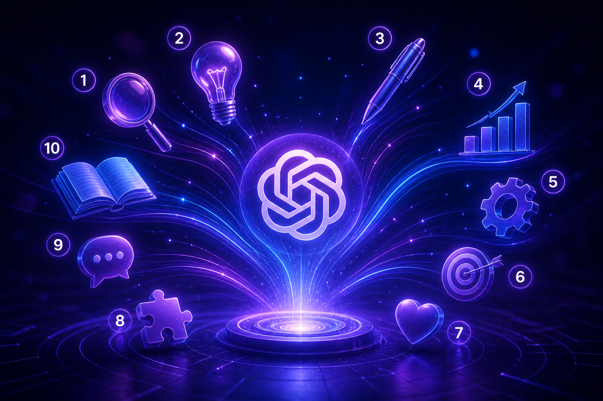

Лицом к лицу с дипфейком
KlingAI. Разбираем функционал, цены и пошаговый старт.
Практические материалы по нейросетям и ИИ
KlingAI. Разбираем функционал, цены и пошаговый старт.

Готовые запросы для учёбы, работы и повседневных задач. Копируй и используй.
С чего начать, если ты впервые пробуешь ИИ.
Учимся писать правильные, красивые и структурированные статьи с помощью ИИ.
Учимся получать качественные арты и иллюстрации с помощью ИИ.